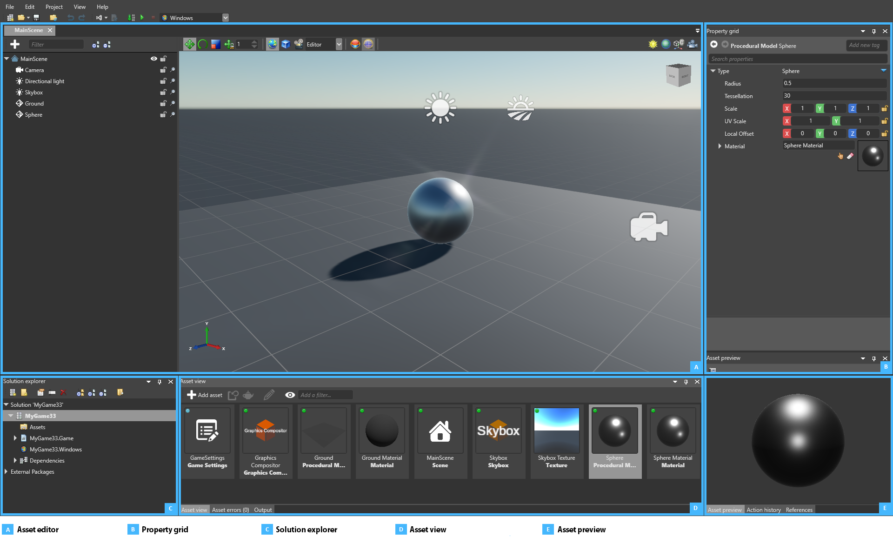

Game Studio
Beginner
Game Studio is the central tool for game and application production in Stride. In Game Studio, you can:
- create and arrange scenes
- import assets, modify their parameters and see changes in real time in the preview window
- organize assets by folder, attach tags and get notifications from modified assets on the disk
- build a game executable and run it directly
Game Studio is also integrated with your Visual Studio projects, so you can seamlessly sync and switch between them.
Interface

The asset editor (A) is used to edit assets and scenes. Some asset types, such as scenes, have dedicated editors where you can make complex changes to the asset. To open a dedicated editor (when available), double-click the asset or right-click it and select Edit asset.
The Property Grid (B) displays the properties of the asset or entity you select. You can edit the properties here.
The Solution Explorer (C) displays the hierarchy of the elements of your project, such as assets, code files, packages and dependencies. You can create folders and objects, rename them, and move them.
The Asset View (D) displays the project assets. You can create new assets using the New Asset button or by dragging and dropping resource files into the Asset View. You can also drag and drop assets from the Asset View to the different editors or the Property Grid to Create an instance of the asset or add a reference to it. By default, the Asset View is in the bottom center.
The Asset Preview tab (E) displays a preview of the selected asset. The preview changes based on the type of the asset you have selected. For example, you can play animations and sounds. This is a quick way to check changes to an asset when editing it in the Property Grid. By default, the Asset Preview is in the bottom right.
You can show and hide different parts of the Game Studio in the View menu. You can also resize and move parts of the UI.